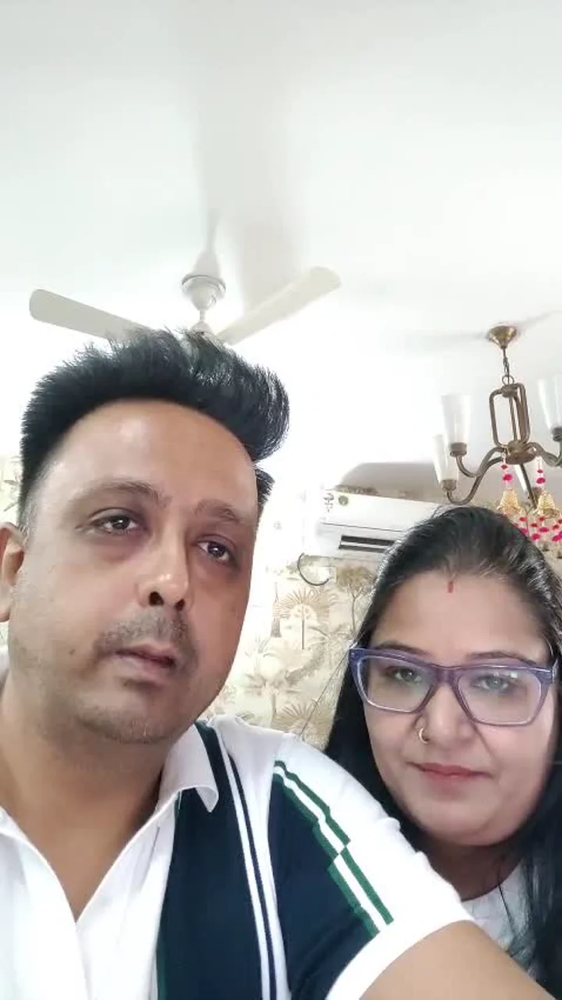
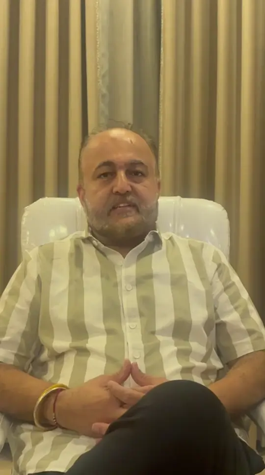

A home you already use
Entrance, living areas, kitchen, bedroom or study around your household’s needs.

DR. NARAYANI GARG / AUTHOR
Her mind-first perspective, in her own words.
THE QUESTION YOU BRING
Entrance, living areas, kitchen, bedroom or study around your household’s needs.
Office, shop, factory, clinic or studio, including entrances and seating.
Orientation, layout, intended use and constraints before choosing a property or plot.
CLIENT VOICES
Being understood
“Whenever we talk to her, it feels as if one of our own is lovingly showing us the right way, and trying to understand things from our side.”

Personal and professional challenges

1:11Puneet shares his experience of Narayani’s guidance through personal and professional challenges.
Accounts of Narayani’s wider guidance, not verified results of this service. Individual experiences are not guarantees; availability mentioned is not a response-time promise.
HOW NARAYANI APPROACHES IT
A plan starts the discussion. Narayani considers the arrangement alongside the people, their needs and the way the space is used.
Tap a label to explore the illustration.
Identify the orientation, entrance and arrangement.
Consider where people live, sit, work and move.
Discuss relevant changes and constraints before committing to work.
YOUR CONSULTATION OPTIONS
A full space review, a property-selection enquiry and desk guidance are distinct conversations.
A room-by-room conversation about your home, its layout and household use.
Discuss thisOffices, shops, factories, clinics and studios, including seating and working areas.
Discuss thisA property or plot you are considering, with orientation, layout and intended use.
Discuss thisA narrower, desk-focused enquiry for job professionals, rather than assuming a full workplace review.
Discuss thisBody Vastu is also listed by NNG. Ask Narayani’s team about its meaning and scope; no health or biological benefit is claimed here.
WHY HER APPROACH MATTERS
The person matters. Explore your beliefs and responses alongside the reading.
The choice stays yours. Ask questions and understand the reasoning. No threats or pressure to purchase a remedy.
BEGIN WITH THE NNG TEAM
Share the type of space and your question. The team will explain the scope and information needed next.
Vastu
No form to complete. Choose a topic if useful, or open a general enquiry.
General Vastu enquiry
Open WhatsApp enquiryReview the message in WhatsApp and send it yourself. Opening WhatsApp does not book or pay for a session.
Please do not send private records, home footage or someone else’s information in your first message.
BEFORE BOOKING
No upload first. After agreeing scope, the team may request a north-marked plan, sketch or relevant photographs.
They are different scopes. Say which you need and confirm the inclusions and fee.
Not initially. Agree footage requirements, privacy arrangements and a non-video alternative before sharing private home material.
Confirm property type, scope, format, visits or reports, duration and fee. No property or desk report is sold here.
Vastu is an interpretive tradition, not structural, medical, legal or investment advice. Consult qualified professionals for building work, safety and purchase decisions. No health or business outcome is guaranteed.